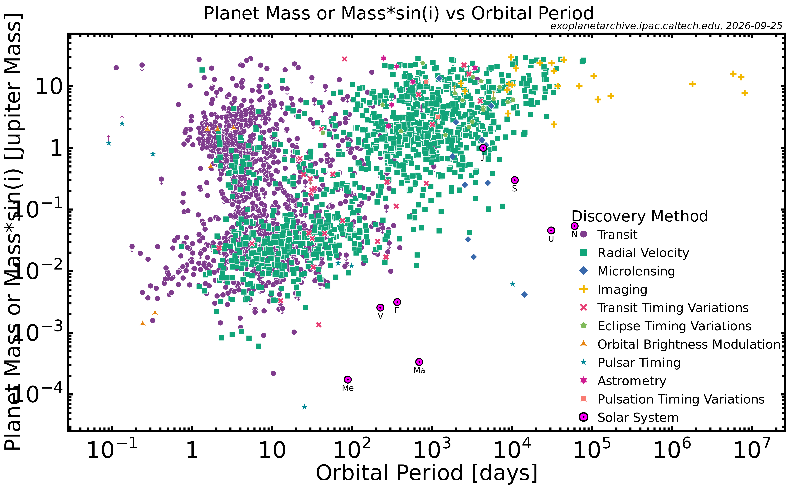

Visualization Critique and Redesign
Exoplanets in mass–period space.
NASA’s original view reveals the extraordinary range of known worlds. This redesign makes its discovery patterns, measurement differences, and Solar System reference easier to inspect.
Part I · Original visualization
Planet Mass vs. Orbital Period
Confirmed planets are positioned on logarithmic axes and grouped by discovery method.

Part I · Redesigned visualization
Explore the worlds we can measure
Inspect individual planets or brush a region to quantify its discovery-method mix and discovery history.
How to read it: farther right means a longer year; higher means more massive.
Equal spacing represents a tenfold change. “M sin(i)” is a minimum mass inferred when orbital inclination is unknown.
Loading confirmed planets…
Loading the NASA Exoplanet Archive snapshot…
Keyboard: in Inspect mode, focus the plot, then use ←/→ to move through visible planets and Home/End to jump.
Data & references
Sources and reproducibility
- NASA Exoplanet Archive. Pre-generated Exoplanet Plots. Accessed September 27, 2026.
- NASA Exoplanet Archive. Planetary Systems Table. DOI: 10.26133/NEA12.
- NASA Exoplanet Archive. Table Access Protocol User Guide.
- NASA/JPL Solar System Dynamics. Planetary Physical Parameters.
- Munzner, Tamara. Visualization Analysis and Design. CRC Press, 2014.